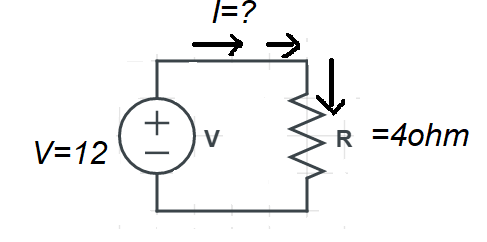

Theory
Objectives:At the end of the Experiment, students will be able
- 1. To Explain ohm's Law.
- 2. To measure unknown resistance in the circuit.
- 3. To measure voltage and current in the circuit.
Theory:
Ohm's law states that the voltage across a conductor is directly proportional to the current flowing
through
it,
provided all physical conditions and temperature remain constant.
Where R= Resistance in Ω.
V= Voltage across resistance in volt.
I= Current flowing through resistance R in ampere.
Analyzing simple circuit with ohm's law:
Let's see how these equations might work to help us analyze simple circuits:
By using ohm's law, we will calculate the amount of current (I) in a circuit, given values of voltage (V)
and resistance (R):
What is the amount of current (I) in this circuit?
I=V/R
The above equation, we got from ohm's law i.e V=IR. We know the value of R=4Ω and V=12Volt which is given
in the above circuit.
I= 12/4=3A
Ohm's Law Applications:
The main applications of Ohm's law are:
- To determine the voltage, resistance or current of an electric circuit.
- Ohm's law is used to maintain the desired voltage drop across the electronic components.
- Ohm's law is also used in DC ammeter and other DC shunts to divert the current.
Following are the limitations of Ohm's law:
- Ohm's law is not applicable for unilateral electrical elements like diodes and transistors as they allow the current to flow through in one direction only.
- • For non-linear electrical elements with parameters like capacitance, resistance etc the voltage and current won't be constant with respect to time making it difficult to use Ohm's law.